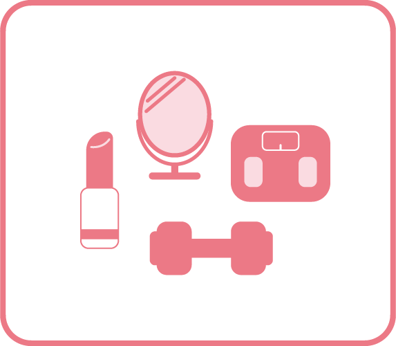

自己研鑽
特長
"推しの存在を原動力にして、自分を高めたり成長したりしようとする"スタイル。
「推しに会うときに恥ずかしくない自分でいたい」「推しのようになりたい」といった気持ちがモチベーションになっているタイプ。
例えば…
- 推しに会うためにダイエット・美容・筋トレを頑張る
- 推しの国籍や作品理解のために語学を学ぶ
- 推しの影響で資格取得や勉強を始める
- 推しのように自分も夢に向かって努力する
- 生活リズム・健康を整えるなど、生活改善に取り組む など
"推しの存在を原動力にして、自分を高めたり成長したりしようとする"スタイル。
「推しに会うときに恥ずかしくない自分でいたい」「推しのようになりたい」といった気持ちがモチベーションになっているタイプ。